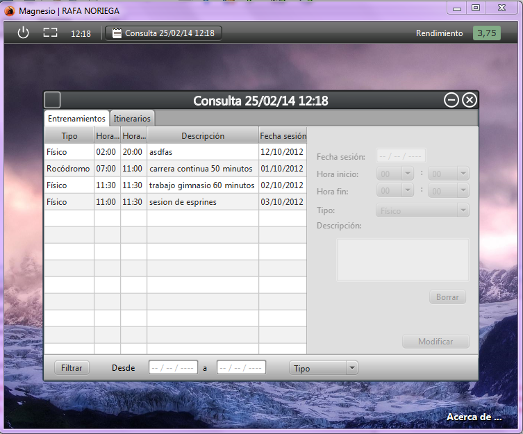
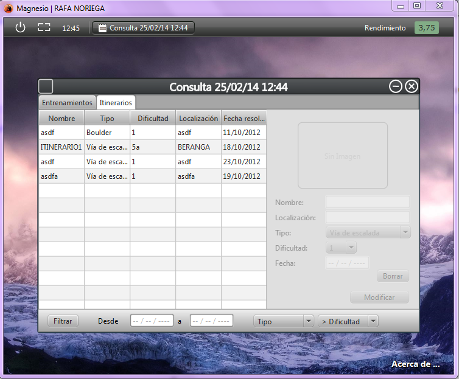
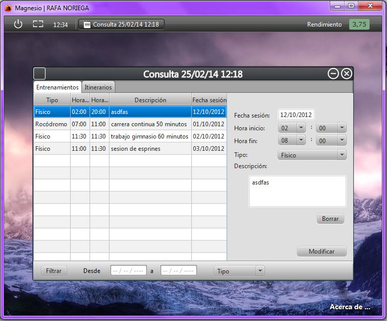
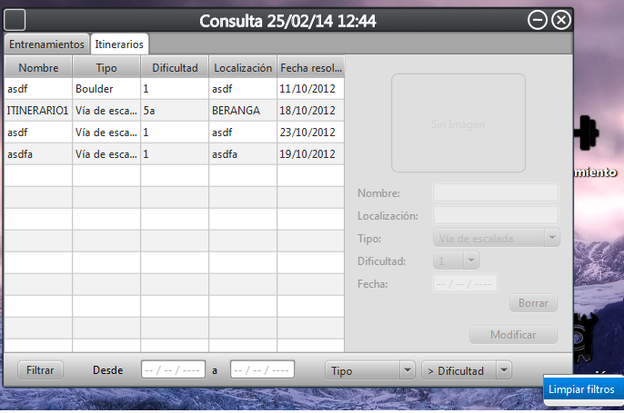

Pantalla de datos
Esta es la pantalla de datos en la cual se encuentra informacion sobre los entrenamientos e itinerarios del usuario.


Como se puede ver en la imagenes se muestra la informacion del usuario en referencia a sus entrenamientos e itinerarios.
Si hacemos click sobre alguna fila de la tabla se abre una banda de detalles referente a la fila seleccionada.

Una vez abierta la banda de detalles se podran modificar los datos con el boton -Modificar- o borrarlos mediante el boton -Borrar-.
En la parte inferior hay una barra de filtros que nos permite filtrar la informacion utilizando el boton -Filtrar-.

Para limpiar los filtros se debe hacer click derecho sobre la barra de filtros y seleccionar la opcion -Filtros-.